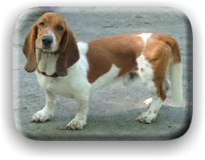

Basset Hound

Basset hounds are part of the hound family, and they have short legs. They were originally bred to hunt rabbits and hare. Also, they came from France, and Great Britain. Basset Hounds are usually black, tan, red, or white with chestnut or sand-colored markings.

Home
Back